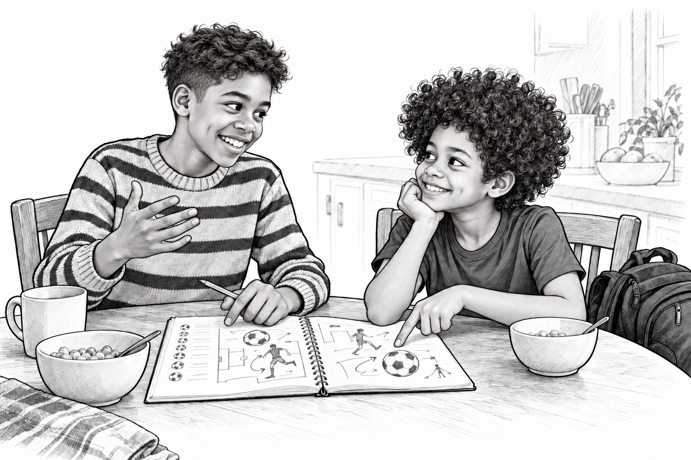
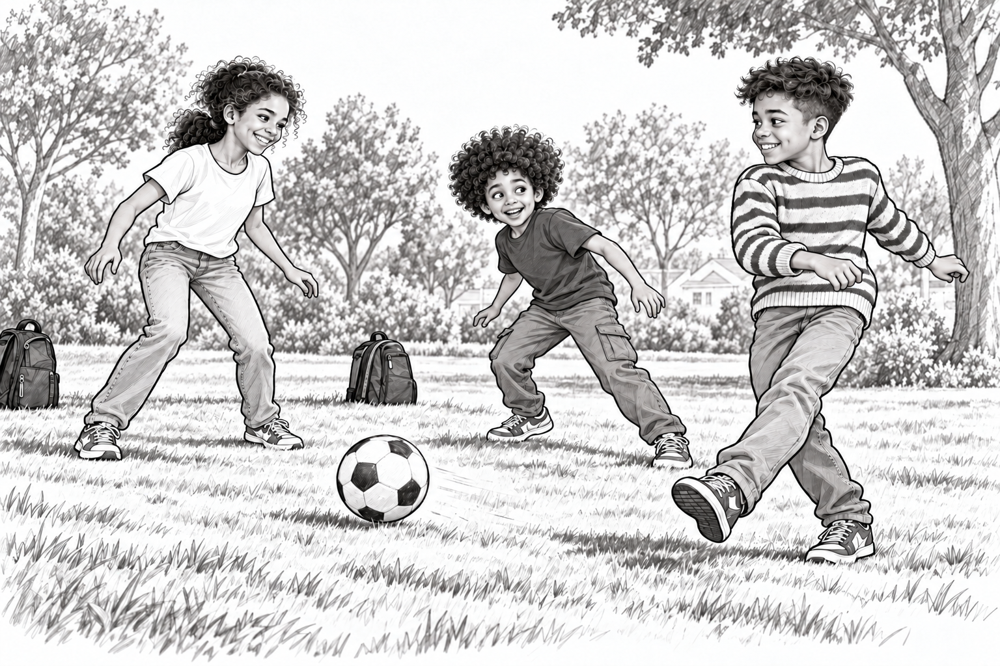

Raph and the Unbeatable Team

A Very Important Argument
Raph was twelve, and soccer occupied a large part of his brain.
The remaining space held schoolwork, Lego ideas and arguments about soccer.
At breakfast, Izzy tapped the table.
“My team would beat your team.”
“Which year's team?” Raph asked.
“Their best year.”
“Against mine in their best year?”
“Obviously.”
That was how another World Cup debate began.
“France beat Brazil three–nil in the 1998 final,” Raph said.
“And Croatia four–two in 2018,” Izzy replied. “I know.”
“You said I forgot!”
“I said you forgot that I know.”
Then they argued about which players would belong on the greatest team ever.
Ruth put her school bag on.
“Our bus is not waiting for the final whistle.”
Raph grabbed his bag.
“We haven't even agreed on the teams!”
“Write them down.”
He did.
Underneath, he wrote: IMPORTANT. FINISH LATER.
The Passenger Beside Him
Raph and Ruth took the city bus to their school together.
Ruth checked their stop. Raph studied his notebook.
“Best player,” he announced. “That's the next question.”
“Best at what?” Ruth asked.
“Soccer.”
“Scoring? Passing? Helping the team?”
Raph opened his mouth.
Then closed it.
That was annoyingly several questions.
“All of it.”
Ruth smiled. “Sounds like a busy player.”
He drew three little stars beside the question.
This debate was getting bigger.

The Pass
After school, Raph met Izzy in the park. Ruth came too, still wearing her running shoes.
They made goals from two pairs of backpacks.
Raph dribbled toward Izzy, who guarded one goal with great seriousness.
“You cannot score,” Izzy declared.
Raph nudged the ball left.
Izzy followed.
Raph moved right.
Izzy followed again.
Raph could almost see the perfect shot.
Then he noticed Ruth beside the goal, completely unguarded.
He passed.
Ruth tapped the ball between the backpacks.
“Goal!” she shouted.
Izzy stared at Raph.
“You tricked me.”
“I passed.”
“A tricky pass.”
Raph grinned.
Later, he opened his notebook again. Under BEST PLAYER, he added another question:
WHO MAKES EVERYBODY ELSE BETTER?
Izzy leaned over his shoulder.
“Good question. My player still wins.”
“Absolutely not.”
Ruth rolled her eyes.
Apparently, the final whistle was still a long way off.
After the Story
What matters most in a great teammate: scoring, passing, encouraging others—or something else?